FILEZILLA FTP SERVER
INTRODUCCIÓN
FileZilla Server es un servidor FTP y FTPS gratuito y de código abierto, diseñado para permitir la transferencia de archivos entre equipos a través de redes locales o Internet. Es conocido por su estabilidad, rendimiento, seguridad y facilidad de uso, lo que lo convierte en una opción popular tanto para usuarios domésticos como para administradores de sistemas.
CARACTERÍSTICAS
| Característica | Descripción |
|---|---|
| Protocolos | -FTP -FTPS |
| Usuarios | -Grupos de usuarios -Usuarios virtuales |
| Permisos | -Permisos de acceso por grupo. -Permisos de acceso por usuario. |
| Auditoria | -Ficheros de auditoria (logging) |
| Seguridad | -Bloqueo o autorización de rangos IP Bloqueos por intentos no autorizados |
| Ancho Banda | -Control de ancho de banda (Vbps) tanto a nivel global, como de grupo Y/o usuario |
| Multiplataforma | Compatible con : -Windows -macOs -Linux. |
| Interfaz gráfica | -Panel de control intuitivo -Monitorización en tiempo real |
En esta guía nos centraremos en la versión para MS-Windows.
INSTALACIÓN
Podemos descargar FileZilla Server desde el siguiente enlace download. En nuestro caso descargaremos la version 0.9.46 aunque ya existen versiones más avanzadas como la 1.12.4 las diferencias entre ambas no son significativas. Ejecutaremos la instalación en modo Administrador.
Licencia
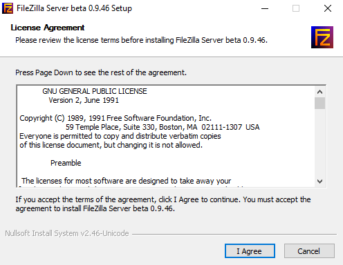
Podemos observar que se trata de software libre con licencia GNU.
Componentes de la instalación
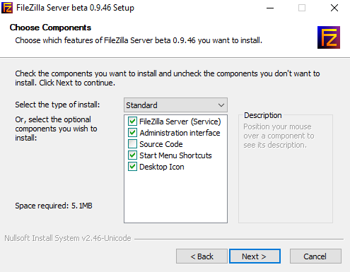
Se suele elegir la opción por defecto, es decir, la instalación standard. Aunque existen otros tipos de instalaciones como por ejemplo, instalar solo la interfaz de administración, o solo el servicio.
Carpeta de instalación
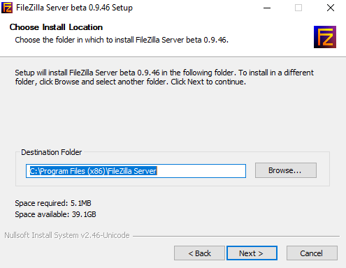
Para las versiones Windows lo habitual es instalar en la carpeta de Archivos de Programas.
Configuración Servicio
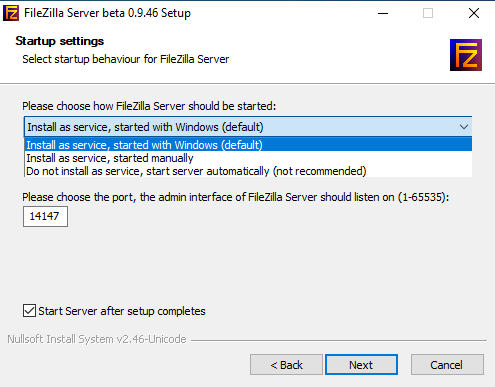
Filezilla Server se ejecutará como un servicio dentro del sistema. Podemos elegir:
- Instalar el servicio en el inicio de máquina.
- Instalar el servicio pero iniciarlo manualmente.
- No instalar el servicio sino ejecutarlo como un programa.
La opción más habititual instalar el servicio en el inicio de maquina. Es importante indicar que el puerto al que hace referencia esta pantalla es el puerto de administración del servicio, no se trata del puerto del protocolo FTP (puerto 21). Podemos cambiarlo y poner por ejemplo otro puerto que más significativo como 21021.
Interfaz administración
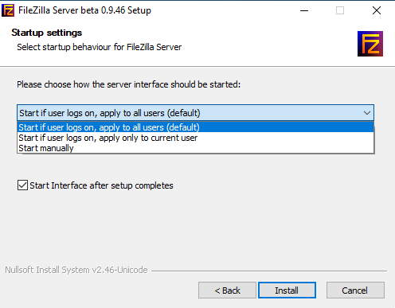
En esta pantalla podemos elegir si la interfaz de administación, aquella a la que accedemos mediante el puerto anteriormente configurado, se inicia automáticamente o bajo demanda. La opción más habitual es bajo demanda (start manually).
Finalización
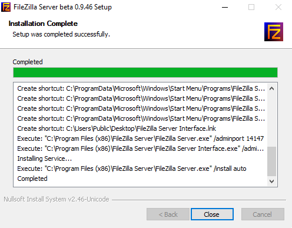
Cuando finalice la instalación se debe pulsar el botón Close.
INTERFAZ ADMINISTRACIÓN
Una vez terminada la instalación nos conectaremos a la interfaz de administración del servidor para configurarlo.
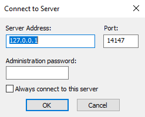
Por defecto nos ofrece conectarnos a la dirección de localhost (127.0.0.1) al puerto configurado para administración (14147 o el que hayamos configurado). La primera vez que nos conectamos no es necesario indicar password ya que no la hemos configurado todavía.
Como vemos, desde la interfaz de administración se puede conectar a cualquier servidor accesible a través de la red. Por ejemplo, podríamos instalar un servidor en una maquina con dirección 192.168.1.10 y posteriormente instalar solamente la interfaz de administración en otra máquina distinta para conectarnos remotamente y administar el servidor instalado en la 192.168.1.10.
Una vez conectados, accedemos a la pantalla principal de la interfaz de configuración.
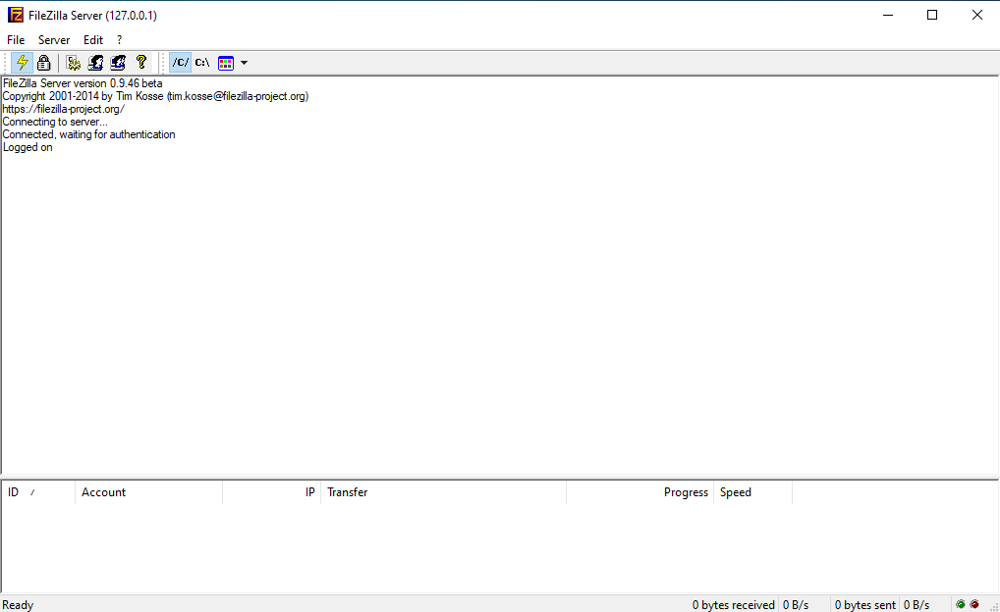
En este pantalla además de realizar la confiuración se puede monitorizar en tiempo real las conexiones que atiende el servidor (panel inferior).
Tenemos 3 opciones de menú: File, Server, Edit.
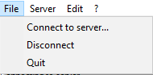
Connect
Permite conectar con otro servidor.Disconnect
Desconecta del servidor actual, pero no sale de la interfaz de administración.Quit
Sale de la interfaz de administración.
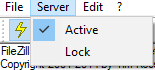
Active
Mantiene el servidor activo atendiendo peticiones FTP.Lock
Bloque el servidor para atender peticiones FTP. El servicio FTP sigue activo pero no atiende peticiones. Es útil, por ejemplo, si estamos haciendo cambios de configuración masivos en el servidor puede ser necesario inicialmente bloquearlo, para posteriormente activarlo al terminar las configuraciones.
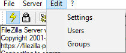
Settings
Permite configurar las opciones globales del servidor.Users
Permite añadir o borrar usuarios, así como configurar sus permisos de acceso.Groups
Permite añadir o borrar grupos, así como configurar sus permisos de acceso.
GLOBALES
En esta sección podemos configurar todas las opciones globales del servidor FTP.
General Settings
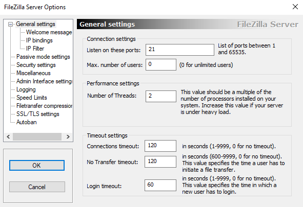
Listen on these port
Puerto para atender peticiones FTP. Por defecto puerto 21. Podríamos cambiarlo si tenemos otro servidor en la misma máquina o quisieramos usar por ejemplo FTPS implíctio (puerto 990)Max. number of Users
Número máximo de usuarios simultáneos que pueden conectarse al servidor. Si dejamos 0 significa usuarios ilimitados, si el servidor tiene pocos recursos se podría saturar. Por ejemplo, si ponemos 100 limitaríamos el número de usuarios conectados y por tanto no se agotarían recursos.Number of Threads
Numero de hilos de procesamiento que puede utilizar FileZilla Server para manejar tareas internas. Como recomendación debe ser un múltiplo del número procesadores o núcleos. Si aumentas el número de hilos mejoras el rendimiento de FileZilla pero empeoras el del resto del sistema. Valroes recomendados para un PC con 4 núcleos son 2,4,8,...Connections timeout
Tiempo (sg) que una conexión puede estar inactiva. Si se sobrepasa se cierra la conexión. Si ponemos 0 significa sin límite y no se recomienda. Por defecto 120 sg.No Transfer timeout
Tiempo (sg) que una conexión puede estar sin transferir datos después del inicio de sesión. Si se sobrepasa se cierra la conexión. Si ponemos 0 significa sin limite y no se recomienda. Por defecto 120 sg.Logging timeout
Tiempo (sg) que un usuario tiene para autenticarse correctamente tras iniciar conexión. Si se sobrepasa se cierra la conexión. Si ponemos 0 significa sin limite y no se recomienda. Por defecto 60 sg.
Welcome Message
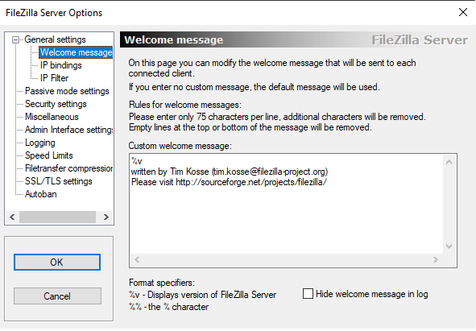
Custon welcome message
Mensaje de bienvenida al usuario una vez conectado al servidor. Se suele utilizar para ofrecer información sobre la versión del servidor%vo sobre el proposito y propiedad de la información que se comparte en el FTP.Hide welcome message in log
Elimina el mensaje de bienvenida en los archivos de auditoria.
IP Bindings
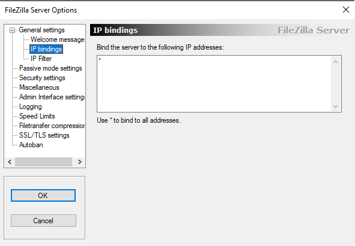
Bind the server ...
Permite indicar en qué direcciones IP de las configuradas en el servidor debe escuchar el servidor FTP para aceptar conexiones entrantes.Esto es útil cuando el servidor tiene más de una interfaz de red (por ejemplo, varias tarjetas de red, IPs virtuales, o configuraciones avanzadas con VLANs, VPN, etc.). Se pueden indicar una o varias IPs o*para indicar cualquier interfaz.
IP Filter
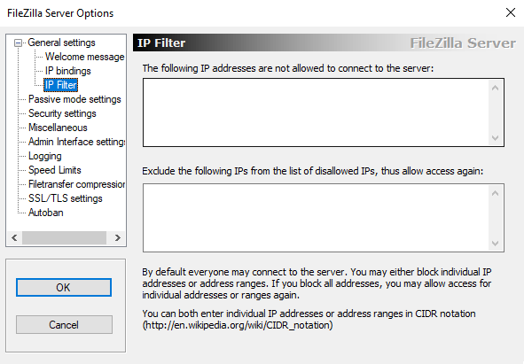
Este sección permite bloquear o aceptar direcciones IP o redes específicas para controlar desde dispositivos se pueden conectar al servidor FTP.
...not allowed...
Permite indicar direcciones IP, rangos de IP o redes de completas que no pueden conectarse al servidor. Por ejemplo: 192.168.1.50, 192-168.1.10-192.168.1.20, 192.168.1.0/24.Exclude...from the list of disallowed...
Permite indicar direcciones IP que pueden conectarse al servidor a pesar de estar incluidas entre las no permitidas. Por ejemplo, 192.168.1.15 está permitida a pesar de haber bloqueado la red 192.168.1.0/24.
Passive
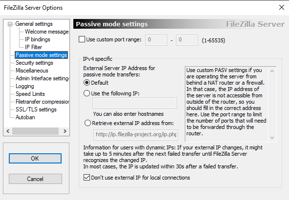
En el modo pasivo el servidor indica al cliente que puerto debe usar para la conexión de transmisión de datos. Este es un modo fundamental para que los clientes FTP puedan realizar transferencias de datos cuando se encuentran en redes NAT (conexiones a INTERNET a través de ISP).Evidentemente al ser puertos del servidor, este debe tener dichos puertos accesibles a través de su firewall.
Use custom port range
Indica el rango de puertos que el servidor FTP usará como puertos pasivos. Un rango típico puede ser entre 50000 - 51000. Si dejas por ejemplo, un rango de pequeño de solo 100 puertos solo se podrán realizar 100 transferencias de datos en un momento dado. Este rango depende de las necesidades y capacidades del servidor FTP. Es importante, que el servidor abra estos puertos en su firewall sino no serán accesibles.IPv4 specific
Es la IPv4 que el servidor enviará al cliente para realizar la conexión de datos. Es importante, si el servidor se encuentra también detrás de una red NAT. Opciones.Default
IP Local. Significa que no hay NATUse the following IP
IP publica. Se utiliza la IP publica del router NAT. Se utiliza para IPs publicas de tipo estático que no cambian con el tiempo.Relative external IP address from
IP publica. Algunos NAT varían la IP publica con el tiempo (por ejemplo ISPs con IP dinámica). Este servicio devuelve la IP publica asignada por el router NAT para que el servidor FTP la pueda enviar al cliente. Servicio por defectohttp://ip-filezilla-project.org/ip.php
Don't use external IP for local...
Se utiliza para evitar usar las IPs publicas para las conexiones de datos pasivas de nodos de la misma red que el servidor. Es recomendable tenerlo siempre activado.
Security Settings
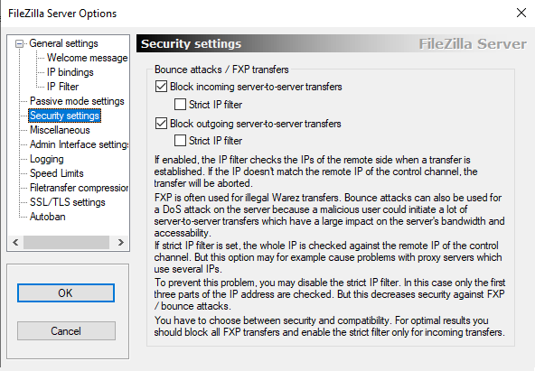
Esta sección permite proteger el servidor contra dos tipos de ataques relacionados con el uso indebido de las conexiones FTP:
- FXP (Server-to-Server transfers)
- Bounce attacks (ataques de rebote)
Ambos intentan usar tu servidor como intermediario para transferencias entre otros servidores o para ataques de denegación de servicio (DoS).
Block incoming server-to-server transfers
Cuando esta activada evita que otro servidor FTP intente conectar con tu servidor para realizar una transferencia FXP hacia tu servidor. Una transferencia FXP es una transferencia entre dos servidores FTP, donde un cliente indica a un servidor que envíe daatos hacia otro servidor. Evita ataques hacia nuestro servidor.Strict IP filter
Si está activada el servidor comprueba que la IP del canal de datos coincide exactamente con la IP del canal de control del cliente que inicio la conexión.
Block outgoing server-to-server transfer
Evita que nuestro servidor intente enviar datos directamente a otro servidor FTP remoto. Evita ataques desde nuestro servidor.Strict IP filter
Igual que la opción anterior pero para conexiones salientes.
Miscellaneous
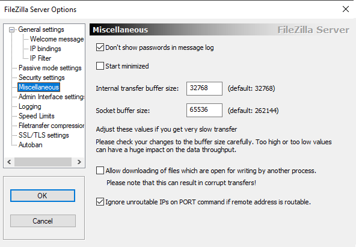
Don't show passwords in message log
Evita que las contraseñas de acceso se impriman en los archivos de auditoria. Es muy recomendable ya que la seguridad del usuario se podría ver comprometida por el log.Start minimized
Si se activa la interfaz de administración se inicia minimizada.Internal transfer buffer size
Tamaño interno de buffer que el servidor FTP utiliza para mover datos de la memoria al motor de transferencia. Si el valor es bajo, habrán transferencias de datos lentas. Si el valor el alto se hace un uso inncesario de RAM y recursos.
Se recomienda dejarlo con el valor predeterminado 32768 bytes.Socket buffer size
Tamaño interno de buffer para la comunicacion a través del socket de red. Se recomienda dejarlo con el valor predeterminado 65536 bytes. Solo debería aumentarse si se experimentan transferencias extremadamente lentas y se han descartado otros problemas de red.Allow downloading of files...
Si se activa esta opción el servidor permitirá la descarga de archivos que esten abiertos y en proceso de escritura por otros programas. Lo mejor es no activar ya que puede provocar la descarga de ficheros corruptos.Ignore unroutable IPs on Port...
En el FTP activo, el cliente usa el comando PORT para indicarle al servidor a que IP debe conectarse para la transferencia. En clientes que estan detrás una red NAT, los clientes suelen enviar IP de ambito local (192.168.x.x ...) que no son alcanzables. Al activar esta opción el servidor utiliza la IP real de la conexión (pública) en lugar de la IP ofrecida a través del comando PORT. Por defecto, debería estar activada.
Admin Interface Setttings
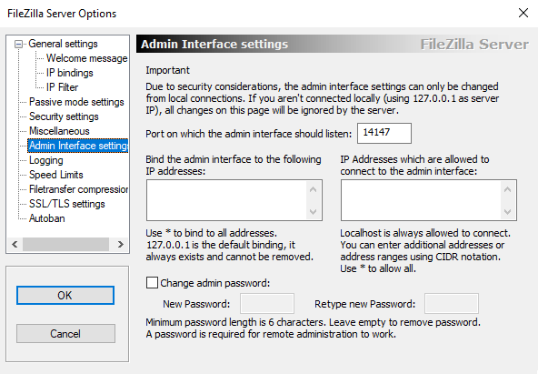
Este apartado solo se permite configurar desde conexiones locales usando la IP 127.0.0.1
Port on which the admin ...
Puerto en el que se escucharan las peticiones para conectarse a la interfaz de administración. Por defecto, 14147.Bind the admin interface ...
Direcciones IP locales en las que se escuchan peticiones para contectarse a la interfaz de administración. Por defecto,*indica todas las interfaces locales.IP address which are allowed ...
Direcciones IP que pueden conectarse a la interfaz de administración. Se puede usar una IP, un rango de IPs, una red o bien*para indicar cualquier dirección (no recomendado). Por defecto localhost (127.0.0.1) siempre tiene acceso a la interfaz de administración.Change admin password
Permite cambiar la contraseña del administrador para conectarse a la interfaz de administración. Si no hay contraseña el servidor no se podrá administrar de forma remota, solo localmente.
Logging
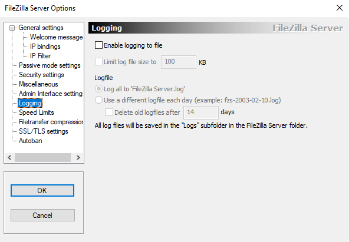
Este apartado configura el registro de actividad o auditoria del servidor. Estos archivos se guardan en el subdirectorio Logs de la carpeta de instalación del servidor.
Enable logging to file
Permite guardar los enventos de actividad en archivos de auditoria (.log)Limit log file size to
Limita el tamaño del archivo de log. Al alcanzar el limite el servidor detiene el crecimiento del archivo. Se siguen registrando nuevas entradas de registro y borrando las antiguas. Por defecto, 100 KB.LogfileLog all to Filezilla Server.Log
Se genera un único archivo de log. Si se marcó la opciónLimit log file size toel archivo no crecerá por encima de dicho limite.Use different logfile each day
Genera un archivo de log diferente para cada día con nombre fzs-year-month-day.log. Se puede indicar en la opciónDelete old logfiles afterla cantidad de dias que dichos archivos permanecen. Si se marcó la opciónLimit log file size tolos archivos diarios no crecerán por encima de dicho límite.
Speed Limits
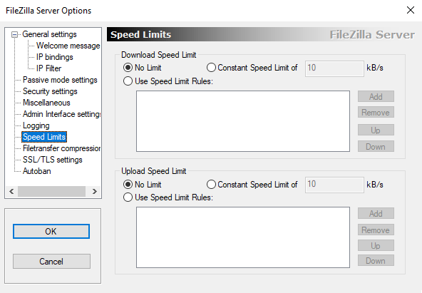
Este apartado permite limitar la velocidad de descarga y subida para los clientes FTP conectados al servidor. Es útil para evitar saturar la red o repartir el ancho de banda entre varios usuarios.
Download
Limite para descargas de clientes FTP.No Limit
Sin limite en la velocidad de descarga.Constant Speed Limit of X KB/s
Velocidad constante de descarga para todos los usuarios limitada a una determinada velocidad en KB/s. Evita saturación del servidor y asegura el mismo ancho de banda para todos los usuarios.Use speed Limit Rules
Permite crear reglas avanzadas. Por ejemplo, por horas, usuarios, IPs. Las reglas se aplican ordenadas por prioridad.
UpLoad
Limite para subidas desde clientes FTP.No Limit
Sin limite en la velocidad de subida.Constant Speed Limit of X KB/s
Velocidad constante de subida para todos los usuarios.Use speed Limit Rules
Permite crear reglas avanzadas. Por ejemplo, por horas, usuarios, IPs. Las reglas se aplican ordenadas por prioridad.
FileTransfer Compression
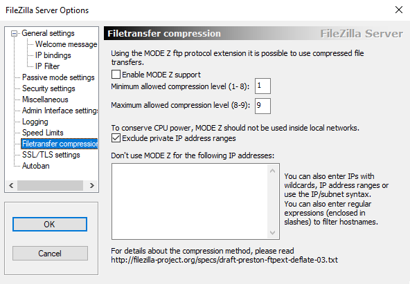
Este apartado permite configurar MODE Z una extensión del protocolo FTP que permite comprimir los datos durante las transferencias para mejorar la velocidad de las conexiones. Es importante indicar que no todos los clientes soportan MODE Z, si el cliente no soporta el modo se realiza la conexión sin compresión. La compresión ocupa tiempo de CPU por lo que se recomienda no activar para servidores sin muchos recursos.
Enable MODE Z support
Permite activar Mode Z. La compresión varía entre los niveles 1-9, donde 1 es minima compresión (menos uso de CPU) y 9 máxima compresión (mas uso de CPU). El servidor eligirá un valor entre esos valores dependiendo del cliente y los datos.Minimum allowed compression
Entre 1 y 8.Maximum allowed compression
Entre 8 y 9.Exclude private IP address ranges
No usar MODE Z en la red local. Permite ahorrar uso de CPU, ya que en la red local se supone que no hay compromiso en la velocidad o latencia con los clientes.
Don't use MODE Z for the following IP addresses
Permite excluir IPs individuales, rango de IPs, redes completas.
SSL/TLS settings
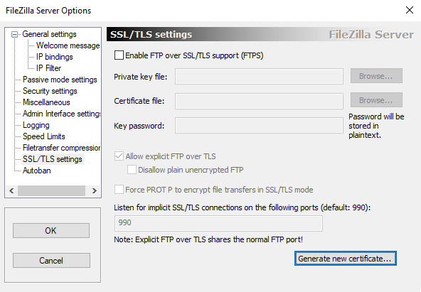
Este apartado permite configurar FTPS. FTPS se trata del protocolo FTP al que se le ha añadido una capa de presentación a través de SSL/TLS. El protocolo SSL/TLS permite el cifrado de la información.
Enable FTP over SSL/TLS
Permite activar el uso de FTPS.Private key file
Nombre del archivo de clave privada.Certificate file
Nombre del archivo de clave publicaKey password
Contraseña para proteger la clave privadaAllow explicit FTP over TLS
Se utiliza el puerto 21 de FTP para ejecutar FTPS. El cliente utiliza el puerto 21 para la conexión y el servidor le anuncia que tiene cifrado TLS mediante AUTH TLS. Si el cliente soporta el modo TLS se continua utilizando FTPS, sino se pasa al modo FTP.Dissallow plain unencrypted FTP
Si esta activado y el cliente no soporta TLS no se realizará la conexión, ya que se impiden conexiones FTP sin cifrar.
Force PROT P to encrypt file...
Obliga a cifrar también las transferencias de datos no solo los datos de control. Activarlo es mas seguro pero consume más tiempo de CPU.Listen for implict SSL/TLS connections
Si hemos desmarcado la opciónAllow explicit FTP over TLSsignifica que los clientes no usaran el puerto 21 para la conexión de control sino el puerto FTPS estándar 990 o el configurado a tal efecto. En este caso solo se permiten conexiones FTPS y no FTP sin cifrar. Podemos deshabilitarlo si borramos el número de puerto.Generate new certicate
Sirve para generar los ficheros de clave publica y privada del servidor.
Autoban
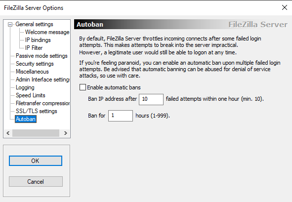
Esta sección sirve para bloquear automáticamente direcciones IP desde las que se realizan demasiados intentos fallidos de login. Esto protege al servidor frente a ataques de fuerza bruta, bots que intentan contraseñas al azar o intentos automatizados de intrusión.
Por defecto, el servidor relentiza progresivamente a aquellos equipos que intentan hacer login y fallan repetidamente. No obstante, tambien se puede activar el autoban.
Enable automatic bans
Permite activar el bloqueo automáticoBan IP address after...
Bloquea una IP después de n-intentos realizados en 1 hora.Ban for n hours
Bloquea la IP durante n-horas. Durante este tiempo el equipo no podrá volver a conectar con el servidor.
GRUPOS
En esta sección podemos configurar los grupos de usuarios del servidor.
General
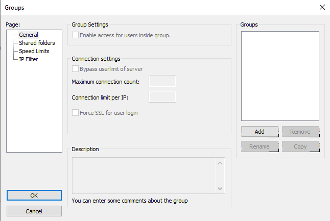
En este apartado podemos crear, borrar, renombrar o copiar grupos de usuarios. Una vez creado un grupo podemos seleccionarlo y configurar los siguientes aspectos generales.
Enable access for users inside group
Habilita o deshabilita el acceso de los usuarios del grupo al servidor.Connections settingsBypass userlimit of server
Si esta activado los usuarios del grupo ignoran el limite global de usuarios definido en el servidor.Maximum connection count
Numero máximo de conexiones permitidas para cualquier usuario del grupo.Connection limit per IP
Limite de conexiones simultáneas por dirección IP para los usaurios del grupo.Force SSL for user login
Obliga a que todos los usuarios del grupo se conecten utilizando FTPS, no FTP sin cifrar.Description
Descripción sobre el propósito del grupo
Shared Folder
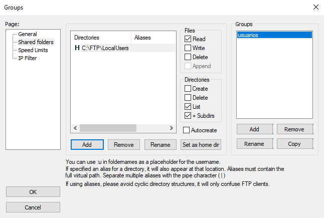
Este apartado permite definir los puntos de montaje (mount points) que veran los usuarios al conectarse al FTP. Es decir: que carpetas pueden ver y usar los usuarios del grupo, que permisos tienen los usuarios sobre dichas carpetas, cual es la carpeta principal para los usuarios del grupos, que rutas virtuales (alias) hay a otras carpetas,...
Add
Añade una carpeta física como punto de montaje. La primera carpeta que se añade se convierte inicialmente en el punto de montajeHomeo/del sitio FTP para los usuarios del grupo.
Al crear un punto de montaje se puede indicar elplaceholder:upara indicar el nombre del usuario que inicio sesión, esto es útil para tener una carpeta por usuario en dicho punto de montaje. Si además lo combinamos marcando la opciónautocreateel servidor FTP creará automáticamente la carpeta del usuario en dicho punto de montaje.Remove
Borra un punto de montaje.Rename
Renombra un punto de montaje.Set as home dir
Convierte el punto de montaje enHomeo/para los usuarios del grupo. Evidentemente, solo puede haber un punto de montajeHomesi se marca uno se desmarcará el que existiera anteriormente.Permisos
Podemos marcar permisos de acceso tanto para los ficheros como para los directorios.Alias
Los alias son puntos de montaje que nos permiten dar acceso a carpetas que físcamente estan fuera del punto de montaje principal oHome. Estos alias aparecerán dentro delHomede los usuarios del grupo aunque físcamente se encuentren en otro lugar. En realidad, el propioHomese trata del alias/que apunta al directorio físico elegido como inicio del sitio FTP para los usuarios del grupo.
Speed Limits
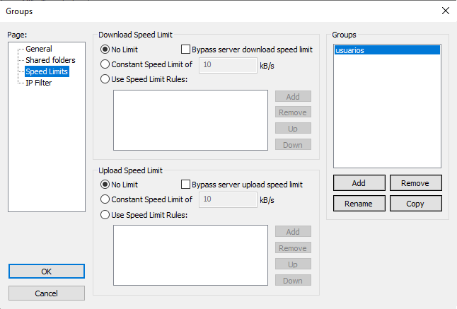
Este apartado configura los limites de ancho de banda para los usuarios del grupo. Las opciones a definir son iguales a las de la sección global para este apartado. Si no se define ninguna opción se aplicarán las globales.
IP Filter
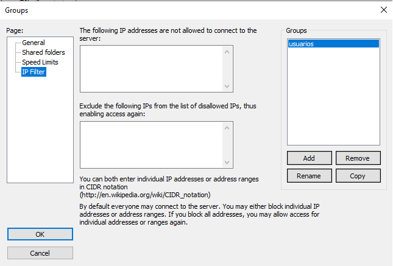
Esta apartado configura el filtrado IP para los usuarios del grupo. Las opciones a definir son iguales a las de la sección global para este apartado. Si no se define ninguna opción se aplicarán las globales.
USUARIOS
En esta sección podemos configurar usuarios del servidor. Si configuramos una opción para un usuario tiene preferencia sobre la del grupo al que pertenece. Para definir la preferencia se utiliza en los campos check-box 3 posibles valores.
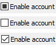
- ◼ Prevalece la opción del grupo.
- ☐ Prevalece la opción del usuario deshabilitada.
- ✓ Prevalece la opción del usuario habilitada.
General
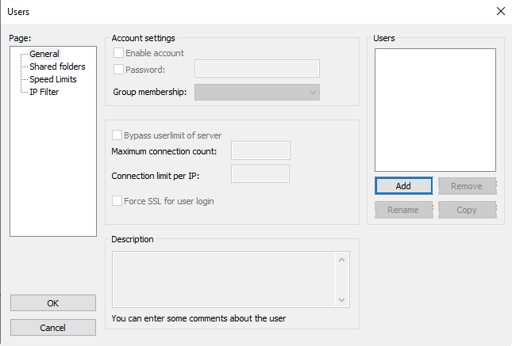
En este apartado podemos crear, borrar, renombrar o copiar usuarios. Al crear un usuario podemos indicar el grupo al que pertenece o no asignalo a ningún grupo.
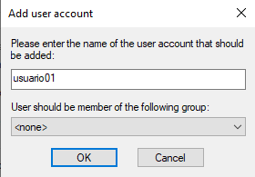
Una vez creado el usuario podemos seleccionarlo y configurar sus opciones generales. Las opciones a definir son iguales a las de la sección grupos para este apartado.
Shared Folder
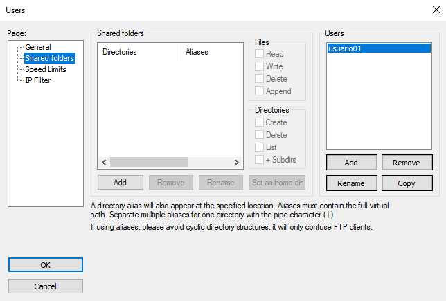
Este apartado permite definir los puntos de montaje (mount points) que vera el usuarios al conectarse al FTP. Las opciones a definir son iguales a las de la sección grupos para este apartado. Si no añadimos ninguno, el usuario verá los puntos de montaje del grupo al que pertenece, no obstante podemos añadir nuevos puntos de montaje o sobreescribir los existentes para el grupo.
Speed Limits
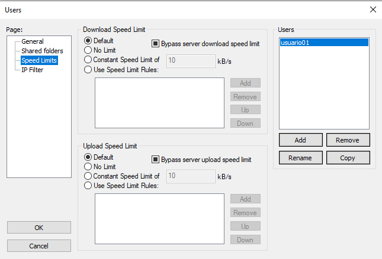
Este apartado configura los limites de ancho de banda para el usuario. Las opciones a definir son iguales a las de la sección grupos para este apartado. Si no añadimos ninguna opción se aplicaran las que correspondan a su grupo o las globales.
IP Filter
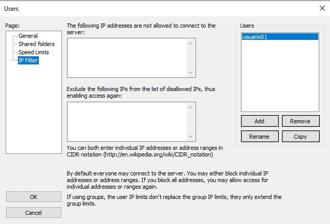
Este apartado configura el filtrado IP para el usuario. Las opciones a definir son iguales a las de la sección grupos para este apartado. Si no añadimos ninguna opción se aplicaran las que correspondan a su grupo o las globales.